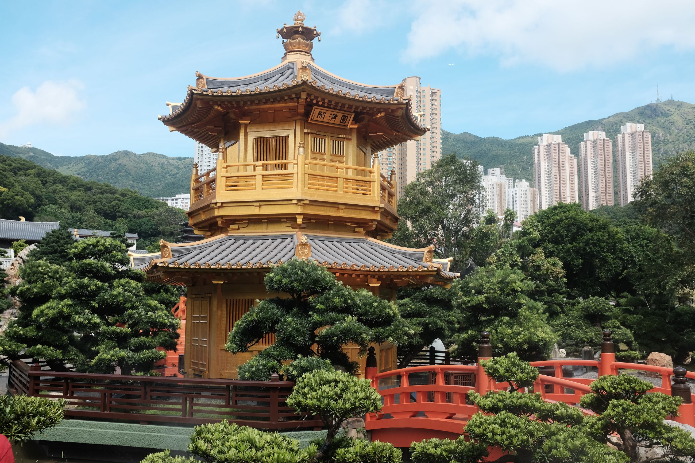
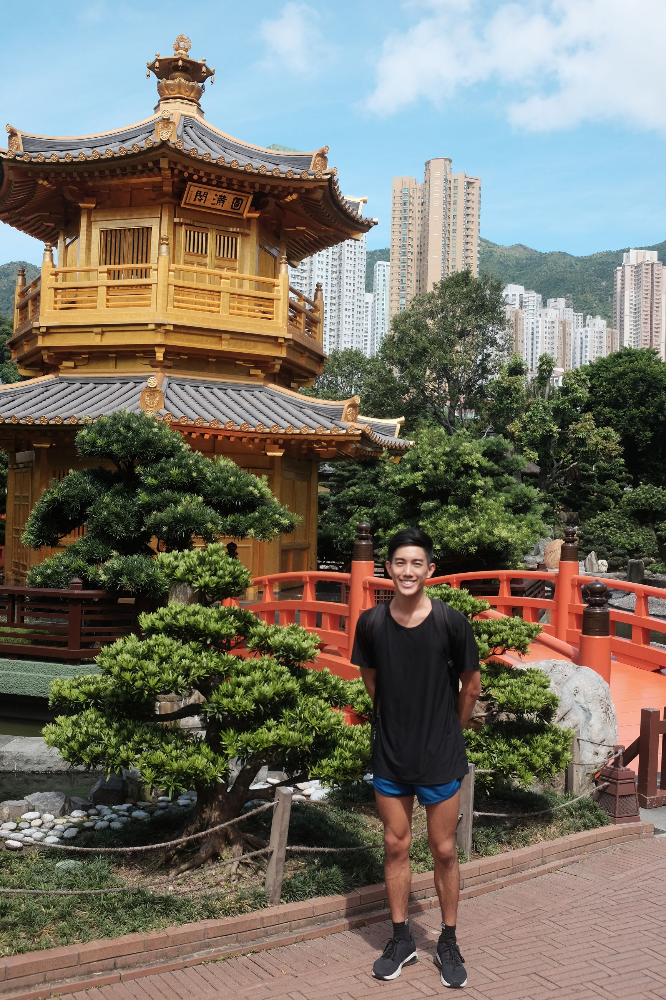
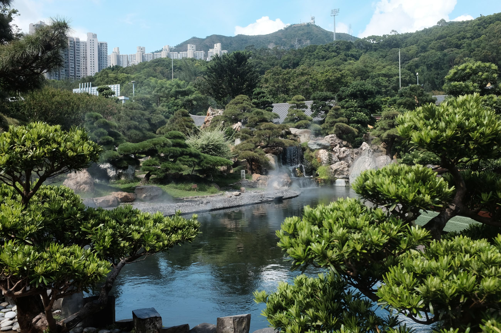
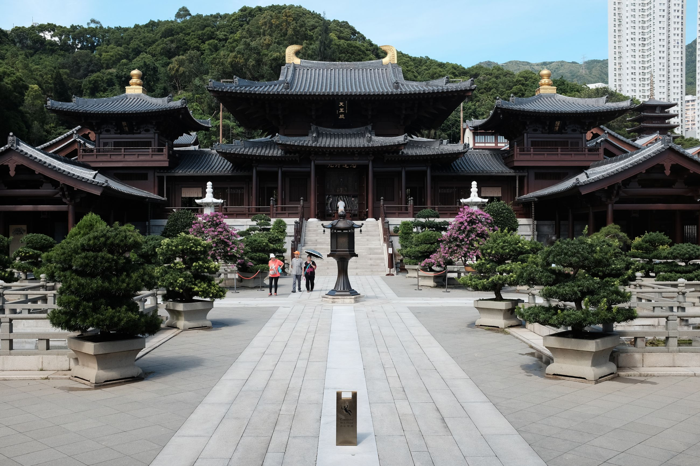

Chi Lin Nunnery is tucked away nearby some overpasses near Diamond Hill Station, unassuming in location. Upon walking in, I ask in broken Cantonese whether bottled drinks are allowed, and the old man standing at the gate responds nicely in Cantonese. My Thai friend, behind me, asks me to translate and before I get a chance, the old man changes to a conversational English. "Oh," I thought, "So that's what he was saying." I have broken Cantonese comprehension as well.

The Nunnery itself connects to a nearby park from which we enter. It's seemingly natural -- the layout, the trees -- at first until we realize that it's in fact pretty groomed. Tacky waterfalls that, behind, lay a panel of glass from which glitzy restaurant-goers can stare at the poor tourists foolish enough to visit the unshaded park in the Hong Kong summer. Further along, a tea ceremony place that costs more than a student can afford, but the lady is nice enough to think we can and proceeds to beckon us in. At the sight of three-digit prices we scurry away across to a souvenir shop. We can at least appreciate some teacups, tacky rocks, and overpriced ethnic stuff, safe from having to actually purchase them (four-digit prices...).

A small museum also occupies the exit of the garden, dedicated to Chinese architecture. Specifically, it traces the technological innovation of the "stacked roof" and how it withstands earthquakes. A very eager woman comes up and asks me for permission to explain the intricacies of the roof. She's unsure if I speak Chinese so she proceeds to explain in fluent English, with a strange passion for the mastery of architecture of the Chinese.

The nunnery, connected through an overhead bridge that passes over a busy Hong Kong road, is structured as a courtyard. Surrounding the central area are interestingly (read: weirdly) shaped rocks with poetry inscribed in Classical Chinese. There are a few tourists, supposedly because it's not a huge tourist attraction, but enough of one to attract passerbys. A group of girls who look Eurasian ask me to take their picture. When I use their camera phone, I see that the phone's system is all in Cyrillic. Central Asia, I think to myself. Another group of Japanese tourists walk around the nunnery. All through my time, I don't see a single nun.

This is my impression of Hong Kong. An odd mix of Chinese and English, kind of like Singapore, but more Chinese. A bit of the glamor with a splash of the traditional. A place of international interest, moreso than Singapore, which tends to draw more Southeast Asian internationality. A bit.. expensive.